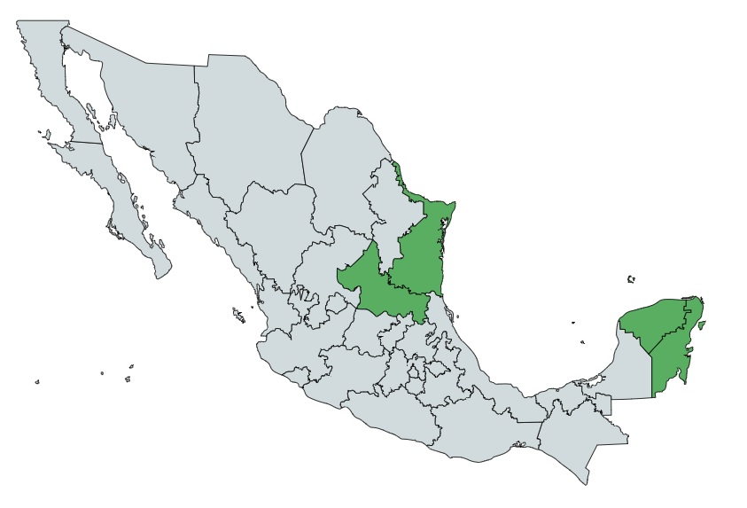

El Guarumo también conocido bajo los nombres de yagrumo, guarumbo o yarumo es un árbol que abunda la zona intertropical de América, desde México hasta América del Sur. En México se le suele conocer bajo el nombre de coilotapalo, e inclusive en inglés como trumpet tree y en maya como K’axixkooch.
El Guarumo es un árbol que llega a medir de 5 a 30 m de altura, su tronco es hueco y derecho, en la cual produce con los años raíces que son contrafuertes también conocidas como zancudas, posee una corteza lisa de un color gris claro, teniendo unas cicatrices circulares con abundantes lenticelas y estipulas caídas, en el caso de sus ramas estas son gruesas y horizontales.
Usos Medicinales:

Contra-indicaciones:
No se debe consumir el guarumo con frecuencia debido a que al ser un diurético se pierde agua, por lo que se puede caer en una fuerte deshidratación, producto de la elevada perdida de electrolitos.
No se debe consumir el guarumo si se esta embarazada, en periodo de lactancia o si se esta tomando medicamentos para la presión arterial ya que los compuestos del guarumo interferirian con los medicamentos.
